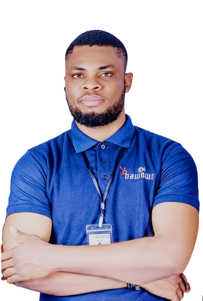

I look forward to a better future.
I believe in collaborative and Dynamic team.
Technology, People and Process.

Bachelor degree holder with a background in STEM .
I have over 5 years of experience coordinating technical Projects from Waterfall environment to Agile/Devops environment.
In my career journey, I have either coordinated the activities of a highly performing agile team to deliver tangible products or taken part in developing a digital product as a UI/UX Designer and Front-end Developer.
Having a growth and continuous Improvement mindset, my attention has recently been given to Cloud based development with Microsoft Azure and AWS. I am familiar with Front end technologies, frameworks and Libraries, Back-end and automation technology like Python, Database technology like MySQL. I am familiar with Networking, Cloud , and Project Management.
I am open to joining a team of Dev-ops, anywhere in the world and also ready to learn new technology to continuously deliver value. Willing to relocate anywhere
A young, intelligent and a business Oriented Project Supervisor, with more than 5 years combined experience, and a demonstrated history of completing high Level business-oriented projects on time and within budget. Educational
Background knowledge in Mechanical Engineering and on the job experience in supervising Project deliverables across various business sections in a multinational environment.
have an Agile and Devops mindset, which
has helped me manage team collaboration, result driven and innovative thinking amongst my team members, which has helped to achieve project success.
have professional skills in Digital technology such as Cloud computing,
UI/UX design, Html, Css, Bootstrap, python and .Net/C#. While deploying best Project management tools and processes to get project delivered on time and within Budget,
interest also focus on utilizing the knowledge
gained in the area of Operation excellence, continuous improvement, Digital Transformation, and Six Sigma to improve on the overall business Process Efficiency irrespective of the industry.